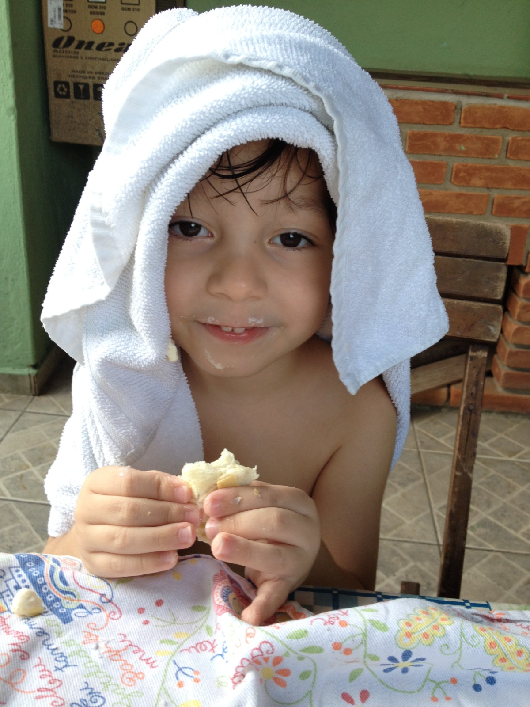

Liberdade financeira
経済的自由A gente trabalha muito mais pra conquistar comodidade do que qualquer outro objetivo. Eu quero ter a estabilidade do dinheiro pra poder desenvolver corpo, mente e espírito, sem distrações. O resto é irrelevante.
TI
情報技術課程Portfólio de Língua Portuguesa · 2MI
EXPLORAR PORTFÓLIO ↘Nome: Julio Milheiro Machado
Série: 2º ano do Ensino Médio
Turma: 2MI
Data de nascimento: 15/02/2010
A última vez que eu escrevi sobre mim, eu coloquei que não me interessava muito no acadêmico. Mas atualmente, um assunto em específico está me fazendo ser mais interessado.
Sou uma combinação de crenças e experiências. Me sinto sem direção; Mesmo seguindo em frente, ainda se pode chegar a lugar nenhum, né? Esforço é inútil sem direção.
Você não precisa do resto.

A gente trabalha muito mais pra conquistar comodidade do que qualquer outro objetivo. Eu quero ter a estabilidade do dinheiro pra poder desenvolver corpo, mente e espírito, sem distrações. O resto é irrelevante.
Eu sou praticante de Karatê e ainda estou nas graduações mais baixas. Mas, o que me diferencia dos outros graduados é que meu interesse é maior. Eu busco me aprimorar e entender a arte mais do que os outros; Pra mim o Karatê é um caminho que eu quero ser um dos que chegaram mais perto de ver o que tem no fim. Por conta disso, espero um dia fazer o Kumite de 100 homens, que é você lutar contra 100 pessoas de maneira seguida; É uma tradição do Karatê
Eu sou uma pessoa difícil. Orgulhoso, irredutível e fechado. Mas as vezes eu me pergunto se o que eu estou fazendo é o certo. Só o tempo vai me dizer.
'O Sebrae SP promove ações voltadas ao empreendedorismo, à inovação e à formação profissional.'
'Em 2025, as atividades buscaram desenvolver habilidades como planejamento, criatividade e resolução de problemas.'
Pra ser sincero, não aproveitei muito do evento. Passei mais tempo cochilando do que vendo as tendas em si.

A Santos Digital Week é um evento similar a SEBRAE, então tudo que tá acima se aplica, exceto o último parágrafo.
Dessa vez eu consegui aproveitar muito mais da minha estadia. Conversei com vários empreendedores presentes e me sinto esclarescido de muita coisa.
Vários produtos foram agradáveis, sem contar as amostras grátis. Sem custo.

Notícia: Estados Unidos e Irã: uma guerra que ameaça a economia mundial
Fonte: reuters.com

Vou escrever o que eu entendi:
EUA e Israel estão em guerra contra o Irã, e no Irã tem um estreito importante com petróleo. Por causa disso, o petróleo subiu e o petróleo é um dos combustiveis mais utilizados do mundo.
Uma bosta. Mas é mais preocupante que qualquer outra notícia atual.
A literatura produzida no Brasil mudou ao longo dos séculos, acompanhando transformações históricas, sociais e culturais. A seguir, estão os principais períodos literários, organizados em ordem cronológica, com suas características, autores e obras representativas.
Contexto histórico: início da colonização portuguesa, a partir de 1500. Os textos eram produzidos principalmente por viajantes, religiosos e representantes da Coroa.
Características: relatos sobre a terra e os povos indígenas, descrição da natureza, registros de viagem e textos religiosos voltados à catequização. Ainda não existia uma literatura brasileira independente, mas uma produção escrita sobre o território.
Autores e obras: Pero Vaz de Caminha, Carta (1500); Pero de Magalhães Gândavo, Tratado da Terra do Brasil (1576); José de Anchieta, autor de poemas e peças religiosas.
Esses escritos são importantes como registros dos primeiros contatos entre europeus e povos indígenas e como documentos sobre o início da colonização. Muitos apresentam o ponto de vista europeu sobre o território e seus habitantes.
Contexto histórico: período marcado pela Contrarreforma católica, pela influência da Igreja e por conflitos religiosos e morais. No Brasil, desenvolveu-se principalmente na Bahia.
Características: linguagem elaborada, contrastes entre corpo e alma, pecado e perdão, razão e fé. Utilizava antíteses, paradoxos, metáforas e exageros para expressar conflitos humanos e religiosos.
Autores e obras: Gregório de Matos, conhecido por sua poesia religiosa, lírica e satírica; Padre Antônio Vieira, autor de sermões como o Sermão da Sexagésima (1655); Bento Teixeira, autor de Prosopopeia (1601).
O Barroco apresentou uma literatura marcada por contradições e conflitos, refletindo as tensões religiosas e sociais de seu tempo.
Contexto histórico: influenciado pelo Iluminismo e pelas ideias de simplicidade e equilíbrio. No Brasil, ganhou força em Minas Gerais, durante o ciclo do ouro e em meio às tensões que antecederam a Inconfidência Mineira.
Características: valorização da vida simples no campo, da natureza, da razão e da harmonia. Os autores buscavam uma linguagem mais clara e equilibrada, em oposição aos excessos barrocos. Eram comuns os temas pastorais e referências à Antiguidade clássica.
Autores e obras: Cláudio Manuel da Costa, Obras Poéticas (1768); Tomás Antônio Gonzaga, Marília de Dirceu (1792); Basílio da Gama, O Uraguai (1769); Santa Rita Durão, Caramuru (1781).
O Arcadismo aproximou a literatura brasileira das ideias iluministas e também abordou conflitos e acontecimentos da sociedade colonial.
Contexto histórico: teve início no Brasil após a Independência, em 1822. A literatura passou a participar da construção de uma identidade nacional, valorizando a paisagem, a história e os personagens brasileiros.
Características gerais: sentimentalismo, subjetividade, idealização do amor, nacionalismo, valorização da natureza e liberdade de criação. Na poesia, costuma ser dividido em três gerações:
1ª geração · Nacionalista ou indianista: valorização da pátria, da natureza e do indígena como símbolo nacional. Destaque para Gonçalves Dias, com Primeiros Cantos (1846), e José de Alencar, com O Guarani (1857) e Iracema (1865).
2ª geração · Ultrarromântica: pessimismo, solidão, sofrimento amoroso, idealização da morte e fuga da realidade. Destaque para Álvares de Azevedo, com Lira dos Vinte Anos (1853), e Casimiro de Abreu, com As Primaveras (1859).
3ª geração · Condoreira: poesia de caráter social e político, marcada pela defesa da liberdade e pela crítica à escravidão. Seu principal representante foi Castro Alves, autor de Espumas Flutuantes (1870) e de poemas abolicionistas.
Outros autores: Joaquim Manuel de Macedo, A Moreninha (1844); José de Alencar, Senhora (1875).
O Romantismo ajudou a consolidar uma literatura com temas nacionais e ampliou a presença de questões sociais, sentimentos individuais e diferentes formas de representar o Brasil.
Contexto histórico: segunda metade do século XIX, marcada por mudanças políticas e sociais, pelo avanço das ideias científicas e pelo enfraquecimento da escravidão e da monarquia.
Realismo: procura representar a sociedade de forma crítica, observando comportamentos, interesses e contradições humanas. Em vez da idealização romântica, apresenta personagens complexos e análise psicológica. Principal destaque: Machado de Assis, com Memórias Póstumas de Brás Cubas (1881) e Dom Casmurro (1899).
Naturalismo: aproxima-se de teorias científicas da época e destaca a influência do ambiente, da hereditariedade e das condições sociais sobre os indivíduos. Aborda conflitos sociais de maneira direta. Destaque para Aluísio Azevedo, com O Mulato (1881) e O Cortiço (1890).
Parnasianismo: movimento poético que valoriza a forma, a precisão vocabular, a descrição e o cuidado técnico com os versos. Seus representantes incluem Olavo Bilac, Via Láctea (1888); Raimundo Correia, Sinfonias (1883); e Alberto de Oliveira, Meridionais (1884).
Essas correntes romperam com vários ideais românticos: o Realismo e o Naturalismo aprofundaram a crítica social, enquanto o Parnasianismo destacou o rigor da construção poética.
Contexto histórico: surgiu no final do século XIX, em reação ao excesso de racionalismo e à visão objetiva associada a outras correntes do período.
Características: musicalidade, sugestão em vez de descrição direta, espiritualidade, mistério, subjetividade e exploração de sensações. Utiliza imagens simbólicas, sinestesia e linguagem mais abstrata.
Autores e obras: Cruz e Sousa, Missal e Broquéis (1893); Alphonsus de Guimaraens, Dona Mística (1899) e Câmara Ardente (1899).
O Simbolismo ampliou as possibilidades da poesia brasileira ao explorar a subjetividade, a musicalidade e aquilo que não pode ser explicado apenas pela razão.
Contexto histórico: período de transição, aproximadamente entre 1900 e 1922. O Brasil vivia a Primeira República, com desigualdades sociais, conflitos regionais e transformações nas cidades.
Características: denúncia de problemas sociais, atenção a grupos marginalizados, crítica às elites e representação de diferentes regiões do país. Não foi uma escola literária com um estilo único, mas uma fase de transição.
Autores e obras: Euclides da Cunha, Os Sertões (1902); Graça Aranha, Canaã (1902); Lima Barreto, Triste Fim de Policarpo Quaresma (1915); Monteiro Lobato, Urupês (1918).
O Pré-Modernismo trouxe para o centro da literatura realidades brasileiras que costumavam ser ignoradas, preparando o caminho para a renovação modernista.
Contexto histórico: a Semana de Arte Moderna, realizada em São Paulo em 1922, tornou-se um marco da renovação artística brasileira. Os modernistas questionavam padrões tradicionais e buscavam novas maneiras de representar o país.
1ª fase · 1922 a 1930: ruptura com regras tradicionais, linguagem coloquial, experimentação, humor e valorização de temas nacionais. Autores e obras: Mário de Andrade, Pauliceia Desvairada (1922); Oswald de Andrade, Manifesto Antropófago (1928); Manuel Bandeira, Libertinagem (1930).
2ª fase · 1930 a 1945: amadurecimento do movimento, com romances sociais e regionalistas, análise psicológica e poesia de reflexão. Autores e obras: Graciliano Ramos, Vidas Secas (1938); Jorge Amado, Capitães da Areia (1937); Rachel de Queiroz, O Quinze (1930); Carlos Drummond de Andrade, Alguma Poesia (1930).
3ª fase · a partir de 1945: maior diversidade de estilos, preocupação formal e aprofundamento da linguagem e da psicologia das personagens. Autores e obras: João Cabral de Melo Neto, Morte e Vida Severina (1955); Clarice Lispector, A Hora da Estrela (1977); Guimarães Rosa, Grande Sertão: Veredas (1956).
O Modernismo transformou profundamente a literatura brasileira, dando liberdade para experimentar a linguagem e representar a diversidade cultural, regional e social do país.
Contexto histórico: reúne produções de diferentes momentos da segunda metade do século XX até o presente, atravessadas por urbanização, ditadura militar, redemocratização, globalização e expansão dos meios digitais.
Características: grande variedade de estilos, temas e formatos. Aparecem narrativas urbanas, memória, identidade, desigualdade, violência, relações familiares, questões de gênero e raça, além de novas vozes regionais e periféricas. Não existe uma única estética que defina toda a produção contemporânea.
Autores e obras: Conceição Evaristo, Olhos d'Água (2014); Milton Hatoum, Dois Irmãos (2000); Itamar Vieira Junior, Torto Arado (2019); Ana Maria Gonçalves, Um Defeito de Cor (2006); Ferréz, Capão Pecado (2000).
A literatura contemporânea amplia quem pode contar histórias e quais experiências são representadas. Sua diversidade reflete um Brasil plural, com diferentes identidades, territórios e perspectivas.
Observação: as datas são referências aproximadas e alguns movimentos coexistiram. A divisão em períodos facilita o estudo, mas a literatura não muda de uma escola para outra de forma imediata.
Nesta seção, apresento três obras da literatura japonesa que abordam diferentes aspectos da existência humana, da disciplina, da estratégia e da filosofia. Apesar de possuírem propostas distintas, todas oferecem reflexões sobre a maneira como o indivíduo compreende a si mesmo e o mundo ao seu redor.
Autor: Osamu Dazai.
Resumo: A obra acompanha a trajetória de Yozo Oba, um homem que, desde a infância, sente dificuldade em compreender e se encaixar nas relações sociais. Para esconder suas inseguranças, ele utiliza o humor e uma personalidade artificial, tentando corresponder às expectativas das pessoas ao seu redor.
Um dos momentos mais marcantes da narrativa acontece quando Yozo conhece Tsuneko, uma mulher com quem desenvolve uma relação afetiva em meio à sua instabilidade emocional e social. A relação dos dois culmina em uma tentativa de suicídio duplo: Tsuneko morre, enquanto Yozo sobrevive. Esse acontecimento representa um ponto decisivo na trajetória do protagonista, aprofundando seus sentimentos de culpa, isolamento e inadequação. Posteriormente, seus relacionamentos continuam marcados pela dificuldade de confiar nas pessoas e de encontrar estabilidade em sua própria vida.
Alienação social, identidade, solidão, inadequação, máscaras sociais e dificuldade de estabelecer conexões humanas.
O livro apresenta uma reflexão sobre a distância entre aquilo que uma pessoa demonstra e aquilo que realmente sente. Yozo representa o conflito de alguém que tenta se adaptar constantemente aos outros, mas acaba perdendo a própria identidade. O episódio com Tsuneko evidencia como sua dificuldade de estabelecer vínculos saudáveis influencia suas decisões e relações. A narrativa questiona o que significa pertencer à sociedade e até que ponto conseguimos conhecer verdadeiramente outra pessoa.
Autor: Miyamoto Musashi.
Quem foi Miyamoto Musashi? Miyamoto Musashi foi um espadachim, estrategista e filósofo japonês que viveu entre os séculos XVI e XVII. É considerado uma das figuras mais conhecidas da história das artes marciais japonesas. Ficou famoso por sua habilidade com a espada, por sua participação em diversos duelos e por desenvolver um estilo de combate com duas espadas, conhecido como Niten Ichi-ryū. Além de sua trajetória como guerreiro, também se dedicou à escrita, à pintura e à reflexão filosófica.
Resumo: Escrito por Miyamoto Musashi no final de sua vida, o livro apresenta seus princípios sobre estratégia, combate e aperfeiçoamento pessoal. A obra é dividida em cinco partes, representadas pelos elementos Terra, Água, Fogo, Vento e Vazio.
Cada parte desenvolve uma perspectiva diferente sobre o caminho da estratégia. Musashi aborda a importância da preparação, da adaptação, da percepção do adversário, do domínio técnico e da compreensão dos princípios que orientam uma prática.
Estratégia, disciplina, autoconhecimento, adaptação, domínio técnico, observação e aperfeiçoamento contínuo.
O diferencial da obra está em apresentar a estratégia como algo que ultrapassa o combate. Musashi demonstra que o domínio de uma habilidade exige estudo, repetição, percepção e compreensão de seus fundamentos. Seus ensinamentos também podem ser interpretados como princípios aplicáveis ao aprendizado, à tomada de decisões e ao desenvolvimento de qualquer atividade que exija excelência.
Autor: Miyamoto Musashi.
Resumo: Dokkōdō, geralmente traduzido como "O Caminho da Solidão" ou "O Caminho de Seguir Sozinho", é um conjunto de 21 princípios escritos por Miyamoto Musashi pouco antes de sua morte, em 1645.
Diferentemente de O Livro dos Cinco Anéis, esta obra é breve e apresenta ensinamentos diretos sobre como conduzir a própria vida. Seus princípios tratam de desapego, independência, aceitação da realidade, autocontrole e compromisso com o próprio caminho.
Autodisciplina, independência, desapego, simplicidade, aceitação, responsabilidade pessoal e liberdade interior.
Dokkōdō apresenta uma filosofia de vida fundamentada na autonomia e no controle sobre as próprias atitudes. Seus princípios incentivam o indivíduo a não depender excessivamente de reconhecimento externo ou de desejos passageiros. A obra também exige uma reflexão sobre a diferença entre liberdade e isolamento, mostrando que seguir um caminho próprio envolve responsabilidade pelas próprias escolhas.
Consideração final: Acho que as três obras conseguem descrever partes diferentes do conflito do homem solitário na sociedade. Não mais humano descreve o sentimento de não pertencer, O livro dos cinco anéis ensina a estratégia sobre a auto preservação e vejo Dokkōdō como um epílogo da vida de Musashi, aquele que se tornou o melhor na arte mais antiga do ser humano: A violência, mas que seguiu o caminho da solidão e morreu um eremita.
Projeto de desenvolvimento de um site para uma empresa fictícia de roupas, utilizando HTML e CSS.
VISITAR PROJETO ↗Este espaço é dedicado ao desenvolvimento do meu próprio site, reunindo projetos, interesses e experiências. (Você está aqui!)
ACESSAR MEU SITE ↗Vou separar um por cada gênero. Não vai ser fácil (kkk), mas eu vou tentar.

Não que seja o meu favorito de todos os tempos, ou algo do tipo.
É muito mais pela minha situação atual, tenho ouvido bem mais dele e refletido nas letras de algumas músicas.
Em especial, vou destacar as Tracks 05 e 06 - Black e Jeremy.
Black - É provavelmente uma das músicas mais emocionantes do milênio dos anos 1000 até os 2000. Provavelmente até do nosso milênio até o próximo. Descreve uma história amorosa, onde no fim, há a amarga aceitação de que as coisas nunca vão acabar como o eu lírico da história deseja. É intenso e é amargo. É uma das minhas prediletas.
Jeremy - Conta a história de um garoto que desde a infância tem delírios de grandeza, ele se pinta em lugares altos como símbolo de sua superioridade e mantém um temperamento agressivo; É baseado em uma história real de um garoto que sofria bullying (assim como na música), Jeremy Wade Delle se suicidou em sala de aula com um tiro na cabeça.
'Isso será difícil, mas tudo é difícil no começo.' - Miyamoto Musashi.
'Se você encontrar o Buda no caminho, mate-o.' - Linji Yixuan.
'O ressentimento e as reclamações não servem nem para si mesmo nem para os outros.' - Miyamoto Musashi.
'Nunca se afaste do Caminho.' - Miyamoto Musashi.
'Você pode abrir mão do próprio corpo, mas deve preservar sua honra.' - Miyamoto Musashi.
Descrição: Tenho formação de inglês fluente. Fiz um teste de nível, parei no último ano do curso, e me formei com quem tinha passado mais ou menos 5 a 8 anos de curso. Legal, né?
Não achei o diploma físico nas minhas coisas. Depois eu tenho que me lembrar de colocar aqui. O resto, é irrelevante.

oi, professora, kkk.
fui caprichando o meu site aos poucos... mas ainda ta bem feinho. Acho que até sábado eu deixo no capricho MESMO com imagens e etc.
tirando isso, espero que a Sra. fique bem!
Até 2027.
um salve pros meus amigos
luiz miguel, lucas baldan, gustavo, patricia (VERME)